Ролик — YouTube CkIyqwDfzwA, русскоязычный обзор про Claude Code. Речь дословно из авто-субтитров канала, собранная в законченные мысли. Под каждой мыслью — только опорные кадры: по одному на каждую смысловую сцену, взятые в тот момент, когда графика на экране доехала полностью. Кадры крупные — надписи читаются. Всего в первой минуте 21 монтажная склейка, но смысловых сцен — 18.
«У Клода последних недель есть одна большая проблема. Он отвечает полотном, оговаривается на каждом шагу и пишет тебе слова, которых ты не просил.»
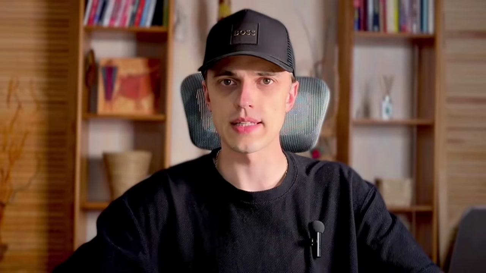
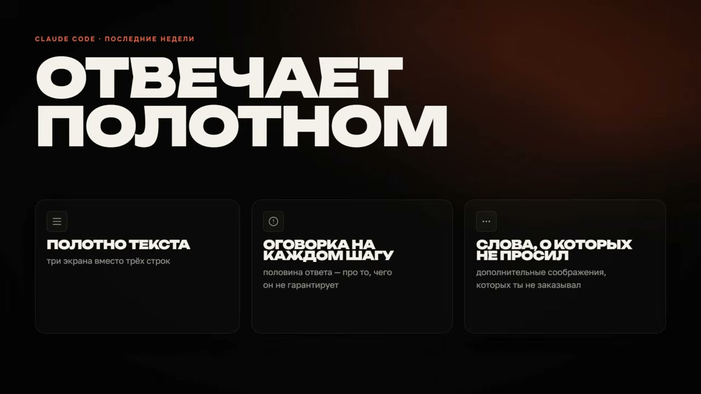
«Выглядит это примерно вот так. Обычный простой вопрос в новом диалоге внутри нашего проекта, и он тебе выдаёт три экрана текста, где нужная строка находится где-то в середине.»
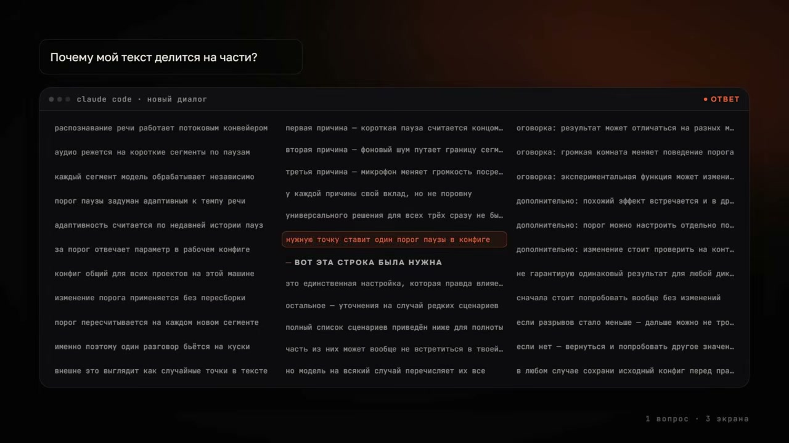
«И заметил, это не я один. Вот куча постов в Твиттере, где люди прямо описывают эту конкретную проблему.»
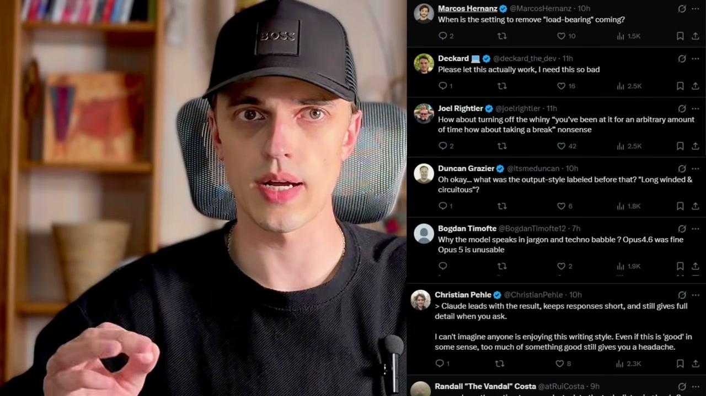
«И дело не в том, что ты как-то не так просишь. Он теперь такой у всех.»
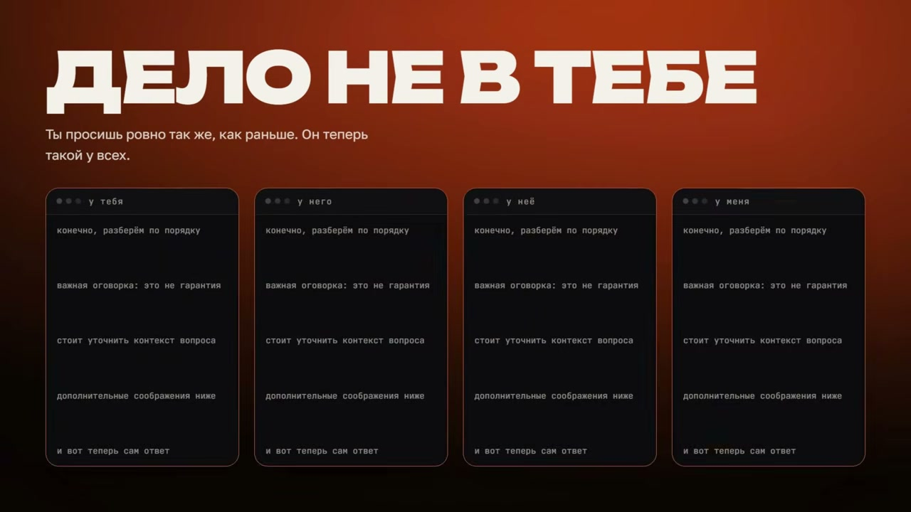
«Но есть и хорошая новость, потому что чинить это придумали не блогеры, а сами Антропик. И там же они объяснили, куда конкретно класть правила, чтобы модель их держала.»
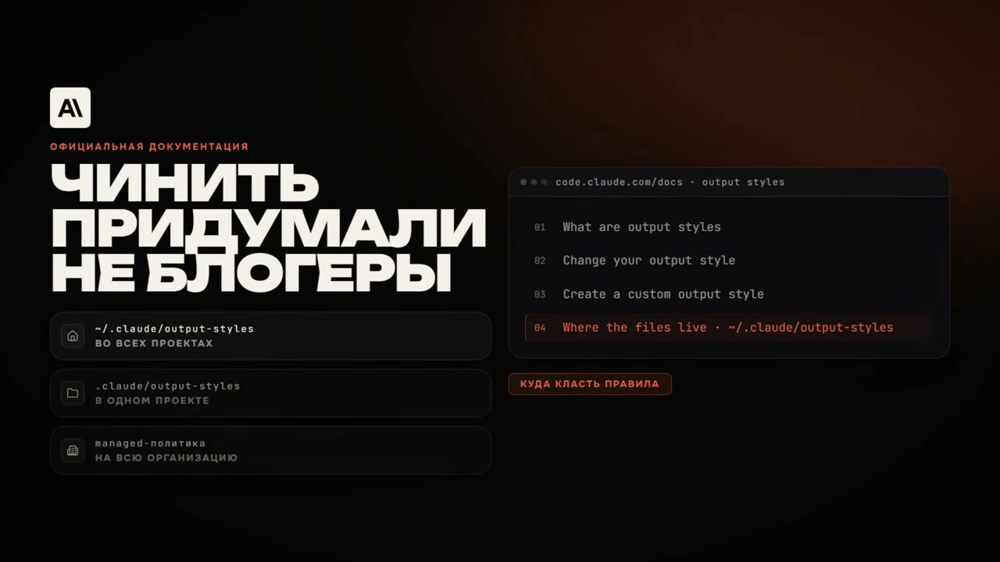
«Плюс есть две команды, о которых почти никто не говорит.»
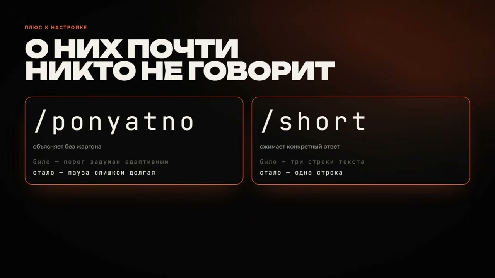
«И вот тот же вопрос после двух изменений. Три строки и первое, что чинить. Ответы короче, лимит тратится медленнее. Читать по горизонтали больше не надо. И, наконец, понятно, что конкретно он вообще говорит.»
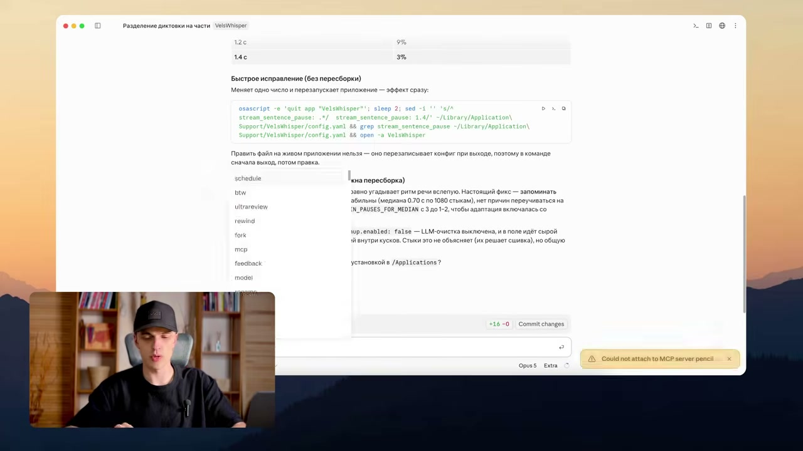
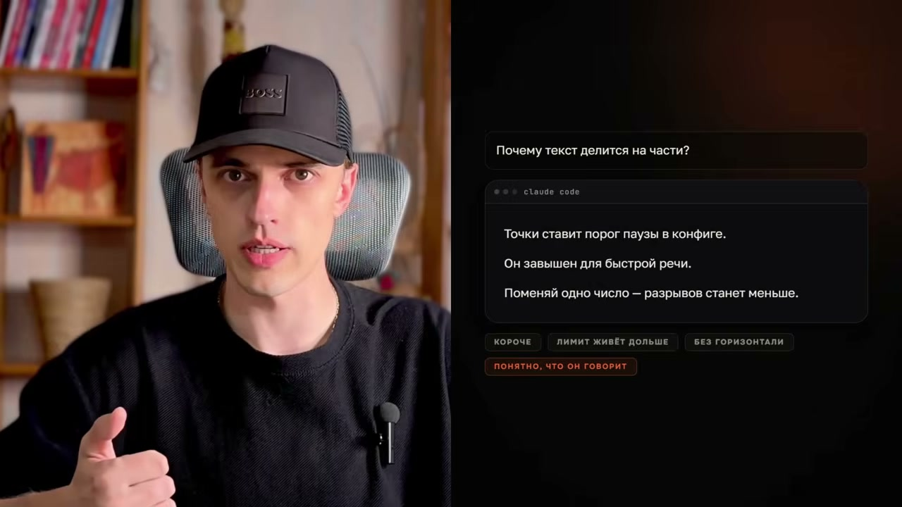
«И обе этих фичи поставлю с нуля прямо на экране. Одну настройку, чтобы он так больше не разговаривал вообще. И две команды на случай, когда длинный ответ нужен, а сжать надо только этот один.»
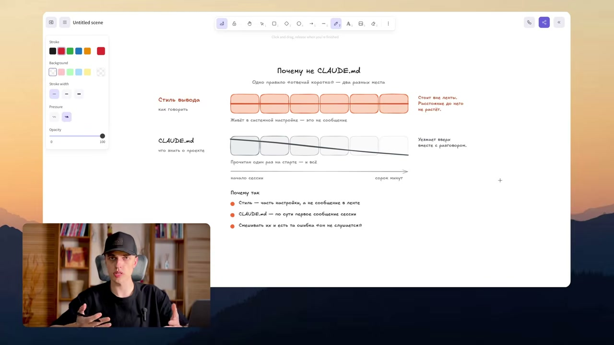
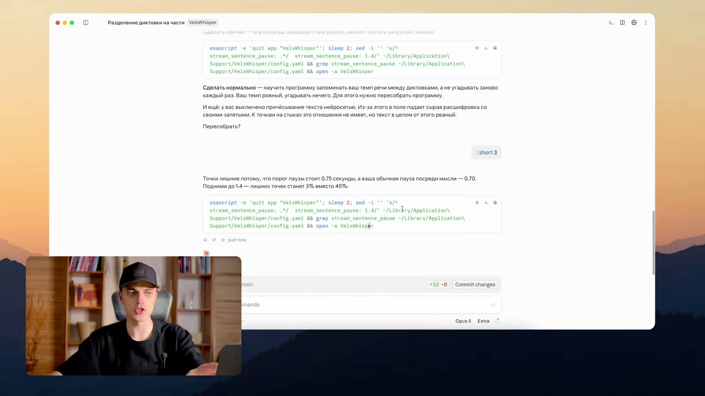
«Досмотри до конца. Я покажу тебе, как забрать весь этот набор готовым. Он лежит у меня в Telegram, ссылка будет в описании и в первом закреплённом комментарии. Поехали.»
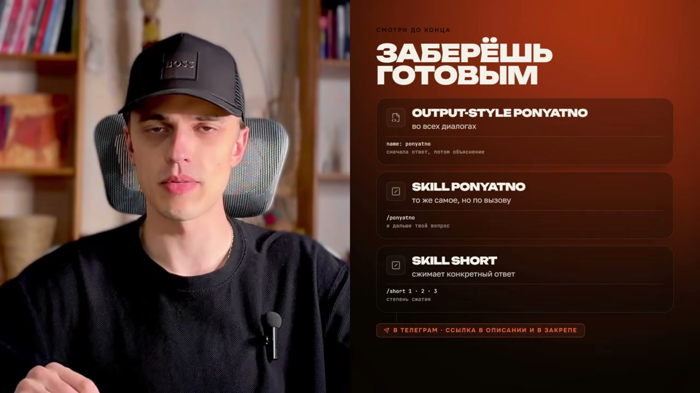
«И давайте сейчас это разберём на текущем примере. Возможно, это не самый плохой из всех, но тем не менее здесь тоже есть, что разобрать.»